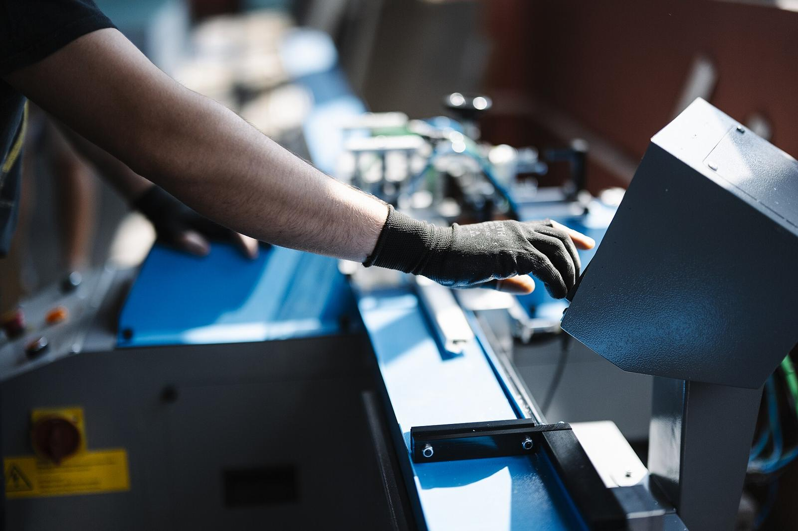
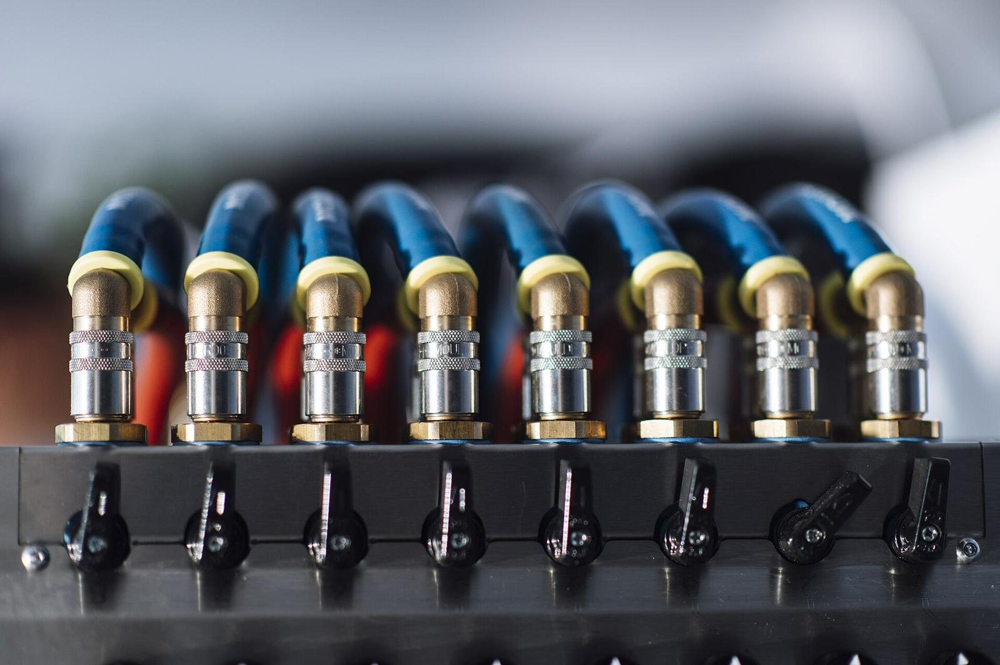
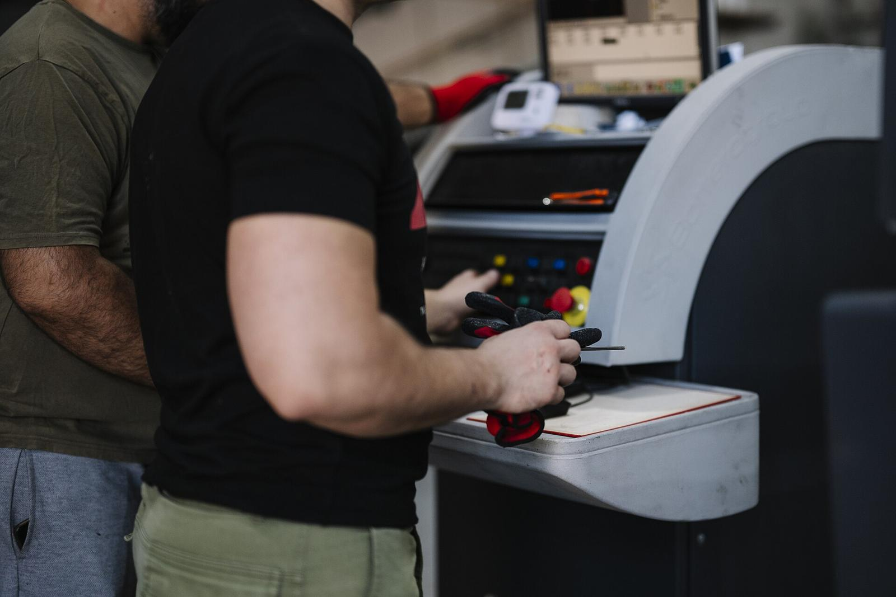

See every line live. Fix problems before they happen.
No moment has been captured yet. Press Read the plant now to start the plant and capture this second, or press Send to deck in the command room at the moment you want to show.
This slide lists the decisions waiting, the open incidents and the machines at risk, with the money at stake. Capture a moment first.
Downtime, quality escapes and energy are the largest controllable costs on an electronics line. Most of the data needed to reduce them already exists on the floor.
A live digital twin of the plant with AI that predicts failures, inspects every board, and recommends the next best action, built on top of existing systems.
Approve a 12-week pilot on one SMT line. Success criteria are agreed up front and measured by your own team.
One failure on an SMT line stops assembly, test and shipping behind it.
A defect found in the market costs far more than one caught on the line.
Tariffs are rising, and export customers ask for CO₂ per unit.
Expert judgement lives in people's heads and leaves at shift end.
The world's leading factories, including the WEF Global Lighthouse Network, solved this the same way: connect everything, see it live, let AI predict, and let people decide faster.

Simulation across the whole chain, from materials warehousing to production and shipping.
In the demo: live twin, time machine, what-if
Agents for quality, production and logistics that plan and act toward goals.
In the demo: six agents with an autonomy dial
Early detection of hazards and automatic prevention across environment, health and safety.
In the demo: safety agent, 0.4 s response
Logistics, assembly and safety robots, with humanoids phased in over time.
In the demo: AGVs dispatched by AI
Digital Factory is a local, fast way to put these pillars to work on one Plant EG-01 line, starting this quarter.
Source: public 2026 announcements by leading global electronics manufacturers on AI-driven factories by 2030.
Siemens electronics plant, Nanjing. Named a WEF Lighthouse in 2026 with more than 50 AI applications and +14% productivity.
Haier water-purifier factory, Qingdao. Quality costs down 72% after 32 digital solutions (company-reported).
Foxconn plans plants and trains robots in a digital twin before building them (company estimate).
Generative AI already makes up 23% of the top solutions in the WEF network.
Sources: WEF Global Lighthouse Network (2025 report, 2026 releases); Siemens press release on Nanjing; Haier press release; NVIDIA and Foxconn case study. Results depend on the starting point.
Nothing is replaced. Digital Factory sits on top of the machines, MES and ERP you already run.

Without AI · reactive
The bearing fails mid-shift. The line stops, parts are rushed in, and overtime is needed to recover.
With Digital Factory · predictive
The AI warns about 40 hours ahead. The repair fits into the shift change. Output is protected.
Source: McKinsey & Company research on predictive maintenance. Results vary with the starting point.
Deep-learning models inspect every unit at line speed. No sampling, no fatigue, no night-shift dip.
Solder bridges, missing parts, tombstones, misalignment and scratches, each with a confidence score.
Defects are linked to process data, for example "bridges up 4×, printer pressure drifted", and fixed at the source.
Ask in plain language. Answers come from live plant data, with their sources.
Test a plan on the twin before committing people, overtime or capital.
The result: morning meetings that make decisions, instead of meetings that collect numbers.
Less downtime (30%)
—Less scrap and rework (20%)
—Energy savings (8%)
—Payback
—Estimated annual value
—Pilot target: unplanned downtime
Pilot target: OEE on the pilot line
Pilot target: scrap and rework
Production impact: no stop needed to install
We build fast and improve on your floor. The demo you just used shows how we work.
Industrial IoT, data engineering, AI and computer vision, simulation, web and mobile.
Egyptian engineers next to your team, in your time zone, from day one.
Open standards. Your data, your models and your IP stay yours.
Pilot success criteria agreed up front and measured by your team.
SMT, final assembly, test and pack. The twin speaks your line's language from day one.

The briefing slides are built from one moment of the command room. Follow it live, or pin the moment you want and the numbers stay fixed.
Plant data is simulated. Moments are kept in this browser only.
Speaker notes